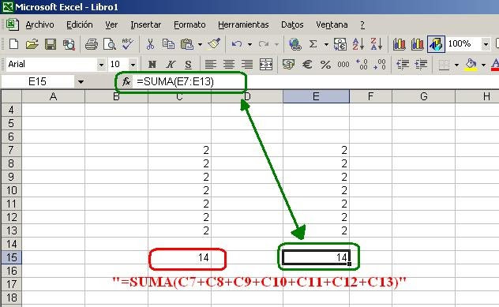
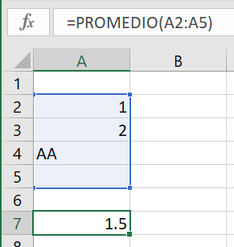
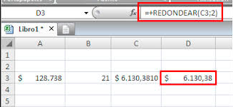
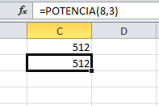
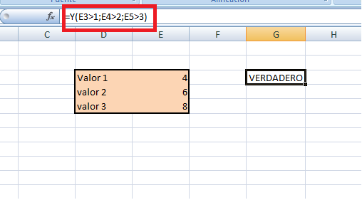
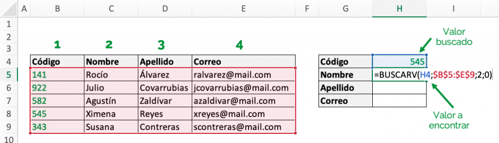

Suma
Descripción: Suma un rango de celdas o valores.
Sintaxis: =SUMA(valor1, valor2, ...) o =SUMA(rango)
Ejemplo: =SUMA(A1:A10)
Uso: Suma todos los valores en el rango A1
PROMEDIO
Descripción: Calcula el promedio de un rango de celdas.
Sintaxis: =PROMEDIO(valor1, valor2, ...) o =PROMEDIO(rango)
Ejemplo: =PROMEDIO(A1:A10)
Uso: Devuelve el promedio (media aritmética) de los valores en el rango A1
REDONDEAR
Descripción: Redondea un número a una cantidad específica de decimales.
Sintaxis: =REDONDEAR(número, núm_decimales)
Ejemplo: =REDONDEAR(A1, 2)
Uso: Redondea el valor de A1 a 2 decimales.
POTENCIA:
Descripción: Eleva un número a una potencia específica.
Sintaxis: =POTENCIA(número, potencia)
Ejemplo: =POTENCIA(2, 3)
Uso: Devuelve el resultado de 2 elevado a la potencia de 3, que es 8.
SI:
Descripción: Evalúa una condición y devuelve un valor si es verdadera y otro si es falsa.
Sintaxis: =SI(condición, valor_si_verdadero, valor_si_falso)
Ejemplo: =SI(A1>10, "Mayor", "Menor")
Uso: Si A1 es mayor que 10, devuelve "Mayor"; de lo contrario, devuelve "Menor".
Y / O:
Descripción: Evalúa múltiples condiciones. Y devuelve verdadero solo si todas las condiciones son verdaderas, mientras que O devuelve verdadero si al menos una condición es verdadera.
Sintaxis: =Y(condición1, condición2, ...) y =O(condición1, condición2, ...)
Ejemplo: =Y(A1>5, B1<10) y =O(A1>5, B1<10)
Uso: Y devuelve verdadero solo si A1 es mayor que 5 y B1 es menor que 10. O devuelve verdadero si cualquiera de esas condiciones se cumple.
NO:
Descripción: Invierte el valor lógico de una condición (verdadero a falso, y viceversa).
Sintaxis: =NO(condición)
Ejemplo: =NO(A1>10)
Uso: Si A1 no es mayor que 10, devuelve verdadero.

BUSCARV:
Descripción: Busca un valor en la primera columna de un rango y devuelve un valor en la misma fila desde una columna especificada.
Sintaxis: =BUSCARV(valor_buscado, rango_tabla, núm_columna, [aproximado])
Ejemplo: =BUSCARV(A1, B1:D10, 2, FALSO)
Uso: Busca el valor de A1 en la primera columna del rango B1 y devuelve el valor en la segunda columna de la misma fila.
